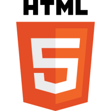
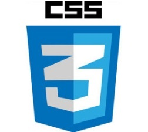
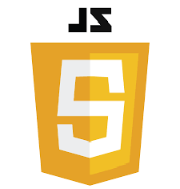
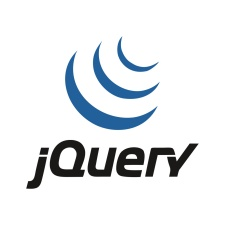
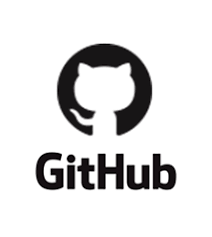
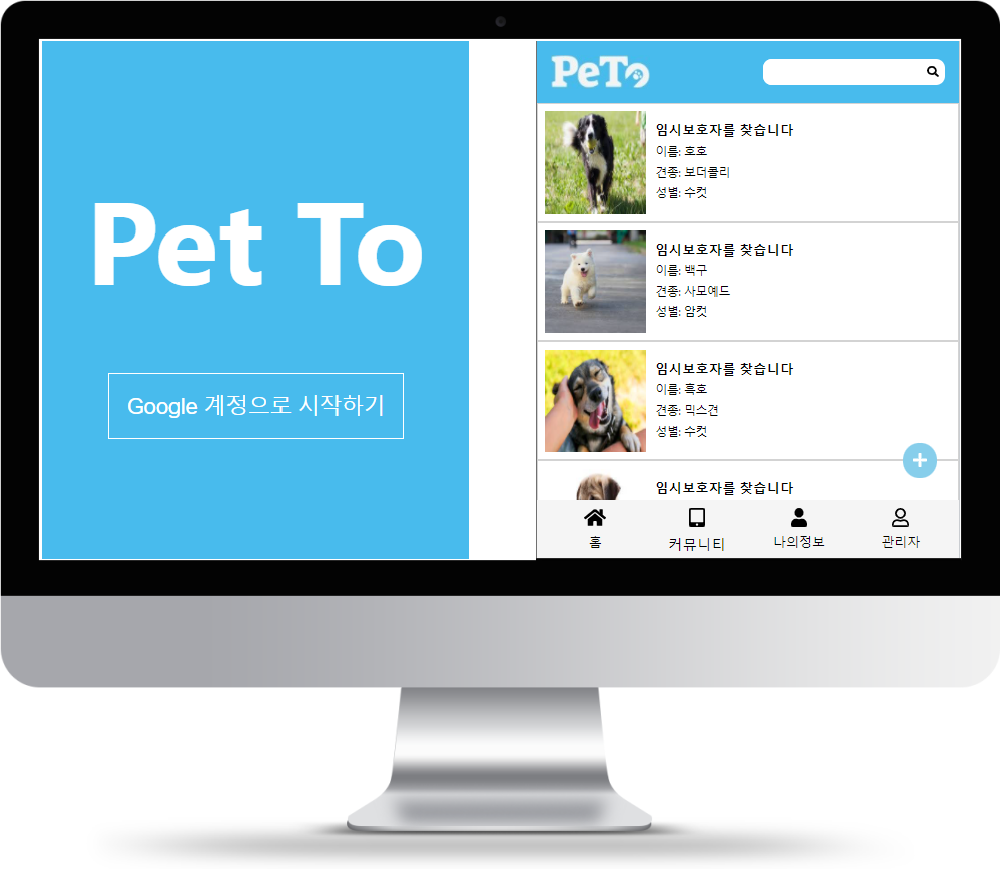
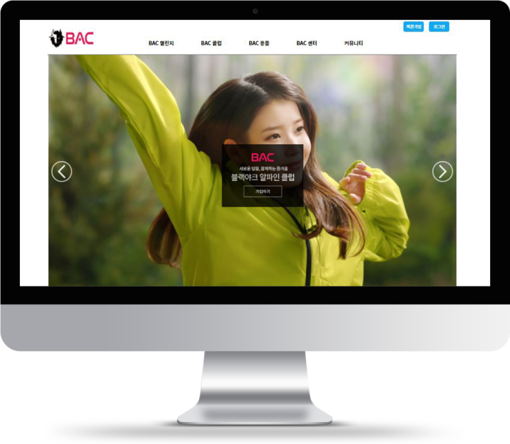
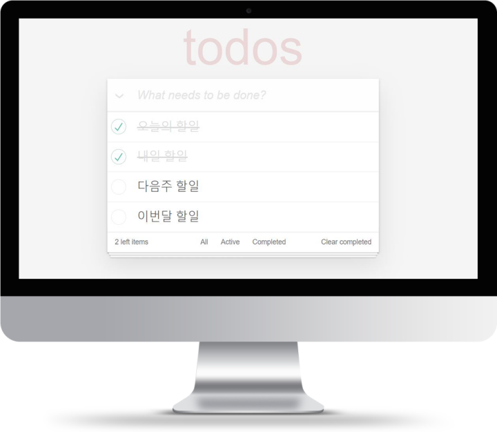

To be
Front-end Developer
About Me
오 충 현(Male)
1990. 06. 27
(Mobile) 010-2978-5118
vght103@naver.com
나란 사람?
안녕하세요, 프론트엔드 개발자가 되고싶은 오충현입니다.
저는 쇼핑몰 MD 관련 및 유학원에서 유학상담 및 수속 업무를
했었고,
개발 직무와는 전혀 다른 경력을 보유하고 있지만 개발에 관심이 생겨
프론트엔드를 공부하게 되었습니다.
처음엔 백엔드를 접했지만, 저에겐 코드 작성이 되는대로 직관적으로
확인이 가능하고
수정을 할 수 있는 프론트엔드에 큰 재미와
매력을 느꼈습니다.
이후 유튜브 및 온라인 강의, 직업훈련 과정을 통해 정식으로
프론트엔드 세계에 발을 들였으며,
현재 React 를 학습하며 프로젝트를 완성하고, 추가로 Redux 를
학습하고자 준비하고 있습니다.
저는 컴퓨터 전공자가 아니고, 현업에서 개발 관련 직무를
경험해보지는 못했습니다.
하지만 캐나다어학원에 8개월간 Student Manager로 근무하면서 학생과
티처와의 중간 역할로 소통의 중심에 있었으며,
다년간
직장동료는 물론 여러 사람과 커뮤니케이션을 해야 하는 직군에
있었기에
개발직군에 가장 필요한 부분인 커뮤니케이션을 원활히 할 수
있습니다.
부족한 부분을 알고, 그것을 채우기 위해 항상 노력하는 성실한 사람입니다.
My Skills
-

마크업, 페이지 구조화, Form 요소 이용, Table 이용
-

배경/텍스트 스타일링, Float/Flex 레이아웃 적용,
반응형페이지 제작 -

DOM, 태그 생성 및 스타일 효과 적용
-

이미지 슬라이드, 메뉴 노출과 같은 동적효과 적용
-
 레이아웃, Form 효과 및 디자인 적용
레이아웃, Form 효과 및 디자인 적용 -

git 저장소 생성, git add / commit / push
-

- React Hook 을 이용한 함수용 컴포넌트 사용
- React-router를 이용한 페이지 이동 및 SPA 구현
- PostCSS 사용
-
REST API를 통해 서버통신 활용
(Firebase / Youtube / Kakao)
포트폴리오 Portfolio
-
01
PeTo (Pet Together)
반려동물 임시보호 프로젝트
리액트를 활용해 제작한 포트폴리오이며 임시보호가 필요한 반려동물들을 노출하고, 임시보호 및 유기견 무료분양을 활성화하기 위한 목표로 제작했습니다. 보호소에서 임시보호가 필요한 반려동물을 업데이트하고, 일반인이 임시보호를 신청할 수 있으며, 커뮤니티에서는 반려동물에 대한 다양한 정보를 공유할 수 있도록 했습니다.
- 제작기간 : 3주소요
- 프로젝트 담당부분 : 댓글 데이터 불러오기 외 모든 작업진행
- React Hook을 이용한 함수형 컴포넌트 활용
- Firebase 의 Firestore를 이용해 데이터 저장 및 활용
- 로그인, 로그아웃 / 게시글 및 댓글 등록, 삭제 기능 구현
- React-router-dom 을 이용한 페이지 이동 구현
- 데이터 검색기능 / 채팅기능 구현예정
- 
-
02
서울시청 사이트 - 클론코딩
정적 웹페이지와 반응형 페이지 입니다.
마크업과 CSS 연습, 미디어쿼리를 적용한
반응형 사이트를 만들기 위한 포트폴리오입니다.
HTML / CSS / Jquery 반응형 페이지는 제이쿼리로 배너 슬라이드 효과를 적용하였습니다.
- 